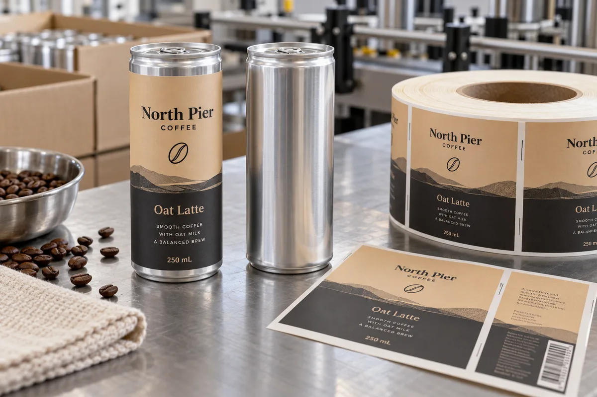

A wrap begins with the metal can you actually buy
I have seen buyers estimate a wrap from the nominal can size, then discover that the usable straight wall is shorter than the design. A 250 mL slim can has shoulders, a neck-in area and a base transition; those zones should not be treated as one printable rectangle. Measure the straight body height and circumference on a sample from the real can supplier. Decide whether the label ends with a small gap or a controlled overlap.
Consider a composite launch with three coffee flavors and a modest first run. A printed can may be attractive at scale, but a pressure-sensitive label can let the team use undecorated stock and revise a flavor without committing every can in advance. The trade-off is an added labeling step and a visible seam, not a free shortcut.
Use a can-specific construction and a line proof
Aluminum is not the difficult part by itself; the finished can surface, coating, temperature and any moisture from filling or chilling change the job. Avery Dennison describes pressure-sensitive label options for beverage cans and bottles, but a category page is not a performance guarantee for a specific line. I would ask the converter for a construction intended for the actual can finish, then run it through the filler and cold distribution sequence.
A label that looks good on a hand-applied showroom can can skew at production speed. Confirm dispensing direction, core size, roll outer diameter and sensor setup with the applicator operator before ordering the full roll.
Keep the seam away from useful information
Put brand and flavor on the main viewing panel. Keep essential copy and any machine-readable code away from the seam, curl and can transitions. Allow a planned safe zone rather than hiding an accidental overlap behind a barcode. A short wrap is often more controlled than a label that tries to meet perfectly end to end across thousands of cans.
The illustrative photograph shows one labeled can beside an undecorated can. It is a packaging concept, not an example of retail-compliant beverage labeling; final ingredient and market requirements belong in the buyer's approved artwork.
When I would move beyond labels
If the product reaches predictable, high-volume production with a stable design, printed cans or sleeves may deserve a fresh cost and line-efficiency comparison. I would not pitch pressure-sensitive labels as the answer to every volume. For a multi-SKU pilot, though, their changeover flexibility can be valuable if the labeling process is already controlled.
Bring the exact can sample, fill process, pack-out photos, expected run sizes per flavor, artwork and coding plan to the quote discussion. The best price comparison includes applicator time and waste, not only a per-label figure.
Our buying view
What we would decide first
Plan the wrap and application method before approving the design. A real production sample can settle that question before a full printed roll is ordered.
Related buyer guides
Frequently asked questions
Can a pressure-sensitive label wrap a slim coffee can?
Yes, provided the straight wall, seam and applicator setup are planned on the actual can and tested at line speed.
When are printed cans a better option?
At stable higher volumes, compare total cost, line speed and artwork-change flexibility rather than only the unit label price.
Review your label specification
Send the real package, dimensions, order quantity, labeling stage, storage conditions and artwork. We can discuss a practical material and proof route.